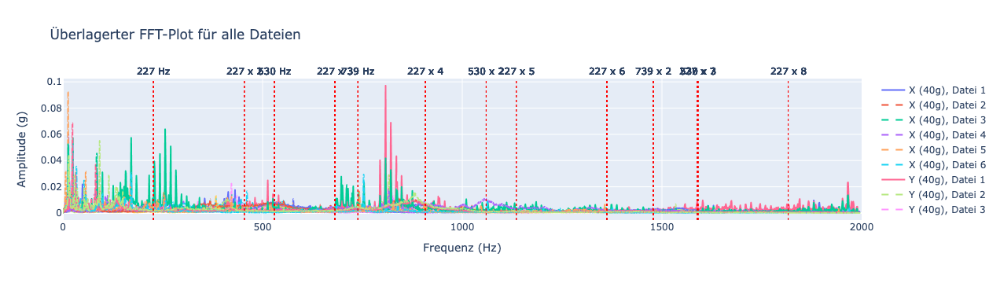
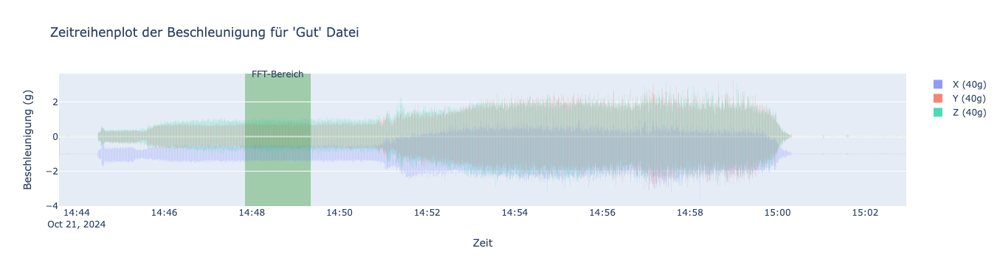

Tool zur Früherkennung von Getriebeschäden mittels Frequenzanalyse.
In diesem Projekt entwickelte ich ein Analyse-Tool in Python zur Auswertung von Vibrationsdaten eines Getriebesystems. Ziel war es, potenzielle Lagerschäden frühzeitig zu erkennen und damit zur zustandsbasierten Wartung beizutragen.
Das Tool nutzte die Fast-Fourier-Transformation (FFT), um Frequenzspektren aus Messdaten zu generieren, die typische Schadensmuster sichtbar machten. Verschiedene Betriebszustände des Getriebes wurden berücksichtigt, um möglichst präzise Ergebnisse zu erzielen.
 